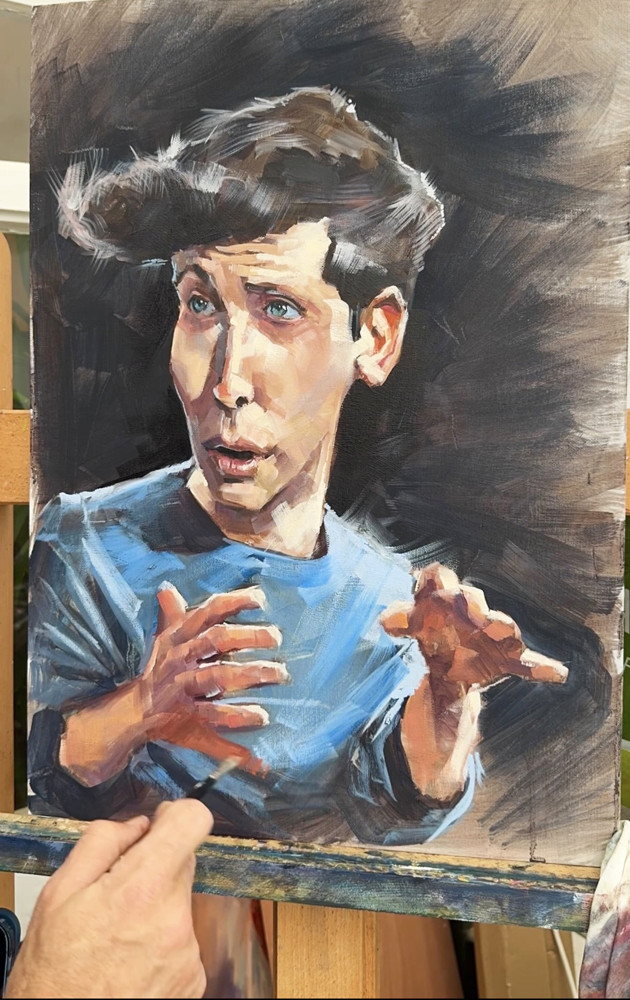
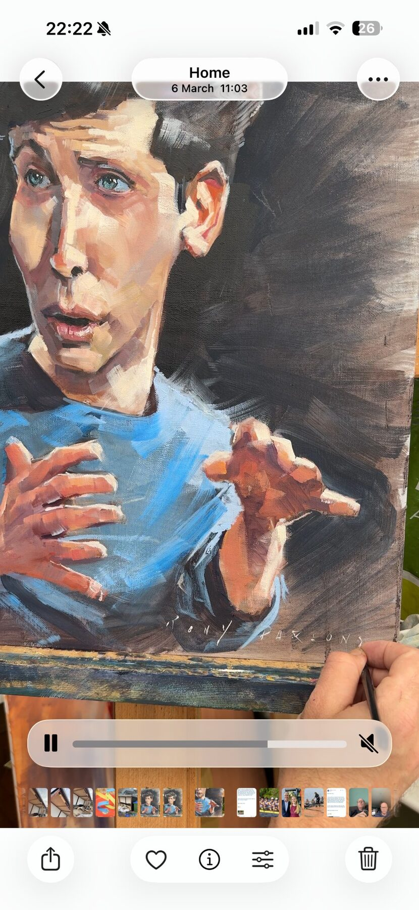
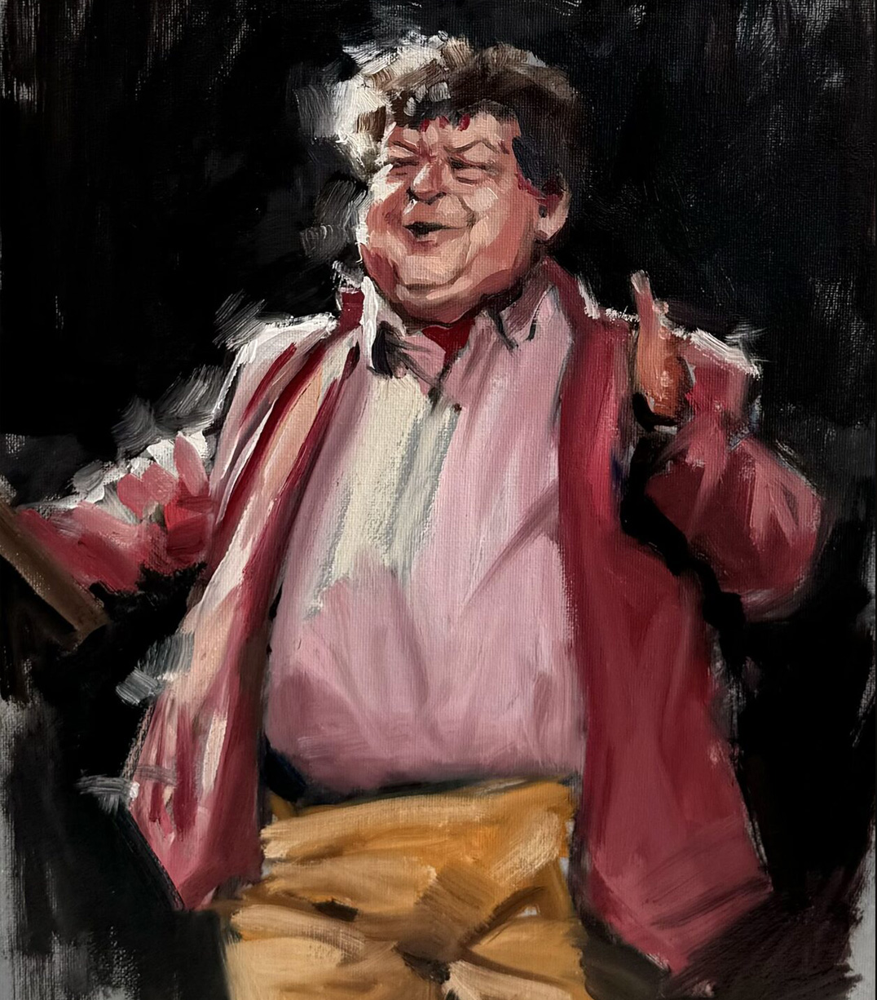
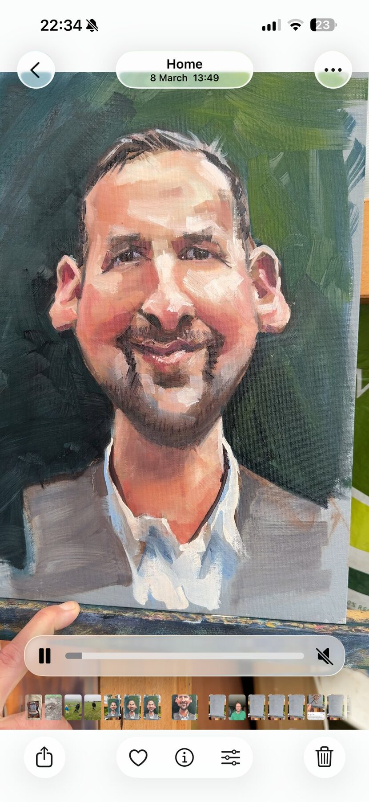
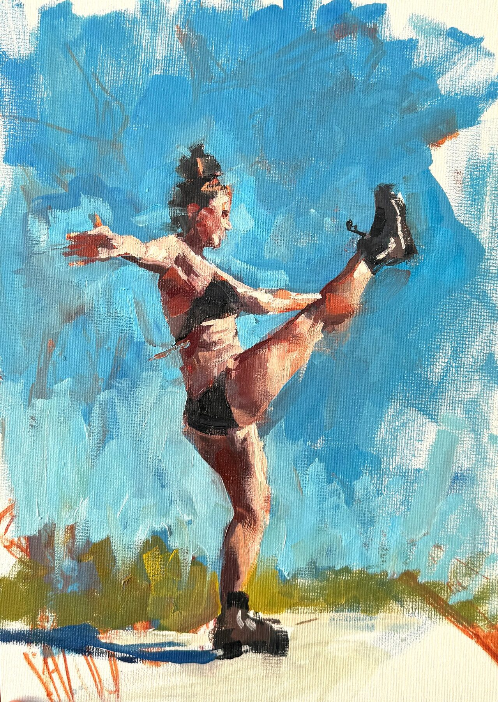
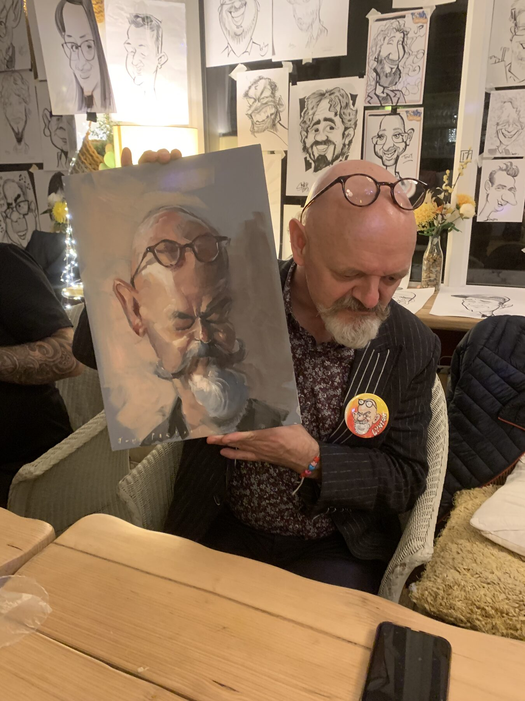

Oil Caricature & Portrait
There is a part of the brain that does nothing else but recognise faces. Not objects. Not landscapes. Faces only. The best caricature works directly with that system — in oil paint, with twenty years of practice behind it.
"This idea of yours solves a huge problem. How to have a portrait of yourself in your home without looking self-aggrandising. The equivalent of putting Bullingdon photos in the loo."
Rory Sutherland · Vice Chairman, Ogilvy
In-house artist
Sky's Portrait Artist of the Year
Commission for HRH Prince William
RAF Search & Rescue
Artist in Residence
BBC Television Centre
European Caricature Likeness Award
Girona, 2011
Until 2013 I was a full-time caricaturist. About forty people in the UK earn their living doing it — drawing faces at weddings and corporate events, making people laugh, paying mortgages, feeding families. It harmed no one and quietly added a little joy to the human experience.
To get good at caricature takes years. It took me five to become comfortable with the basics and perhaps another ten to master the strange psychology of exaggerating a face — the neuroscience of what the brain actually uses to identify someone, and how to work with that system rather than against it. I threw roughly twenty thousand hours at it.
I reached the top of the field. The royal commissions, the television work, the European Likeness Award. All of it. And then I went looking for a much bigger pond — somewhere I could go back to being a student again. I paint landscapes now, worldwide, outdoors, in all weathers. That is my full-time practice and my great love.
But the twenty thousand hours don't go anywhere. The instinct for a face — for what makes it specific, irreducible, undeniably itself — that stays. And occasionally something comes along that deserves it.
Selected Works
Each work begins with sustained looking. Not at pixels — at the face itself, in motion and at rest, until the signal becomes clear. What is large relative to the norm? What proportion is unusual? What makes this face this face, and not any other?

Oil on canvas · 2025

Oil on canvas · 2024

Oil on canvas · 2025

Oil on canvas · Figurative

Oil on board · Caricon
The Method
The neuroscience of face perception — and why oil caricature operates in a domain that image generation cannot reach.
Most pictures, your brain processes in one way. A landscape. A chair. A dog. These are handled by the visual cortex as a general-purpose object recognition problem — features are extracted, compared against memory, a match is found. Efficient. Functional. Largely unconscious.
Faces are different.
Your brain has dedicated neural architecture — the fusiform face area, in the temporal lobe — that does nothing else but process human faces. When it is damaged, the result is a condition called prosopagnosia: the complete inability to recognise faces, even of people known for a lifetime, while all other vision remains entirely intact. The deficit is categorical. Selective. Faces only.
This tells us something important: the brain does not treat faces as images. It treats them as a separate category of perception, governed by different rules, processed by different machinery.
A photograph captures light reflected from a surface. It is accurate in the way a recording is accurate — it contains everything, weighted equally.
The brain does not weight everything equally. When you recognise a face, you are not performing a pixel-by-pixel comparison. You are responding to a small number of salient features — the specific proportions, the relationships between landmarks, the qualities that are unique to that face and deviate meaningfully from an average. Your fusiform face area has already decided which features matter. Everything else is background.
A skilled caricature artist finds those features. Not by guessing, and not by formula — by looking, long and carefully, at a specific face until the signal becomes clear. Then those features are amplified, in oil paint, onto canvas. The result is an image that the brain's face-recognition system finds easier to process than a photograph. People who see a good caricature of someone they know often report that it is more recognisable, more present, than a photograph. This is not whimsy. It is a direct consequence of how face perception works.
An AI image generator processes faces as pixel data. It has been trained on statistical relationships between features and can produce outputs that look face-like, portrait-like, even caricature-like. What it cannot do is engage with the perceptual system that makes a caricature resonate. It has no access to what the fusiform face area actually cares about, because that information does not live in the pixels — it lives in the relationship between a specific face and the neural architecture of the people who know it.
A caricature painted by a skilled artist is not a stylised photograph. It is a collaboration — between the painter's trained eye, the subject's unique face, and the perceptual machinery of everyone who will ever look at it. The painter is working in the same domain as the viewer's brain. An algorithm is not.
Commissions
I spent twenty years mastering this. I worked at the highest levels — television, royalty, the full sweep of it — and when I had done what I set out to do, I left. I paint landscapes now. I sail. I live well.
But occasionally a subject comes along that is genuinely interesting. A face worth spending serious time with. A commission with some weight to it — a retirement after a remarkable career, a gift for someone extraordinary, something that deserves more than a photograph and more than a party trick.
Those I consider.